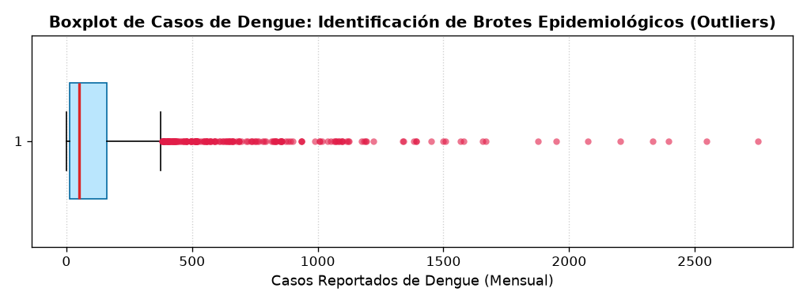
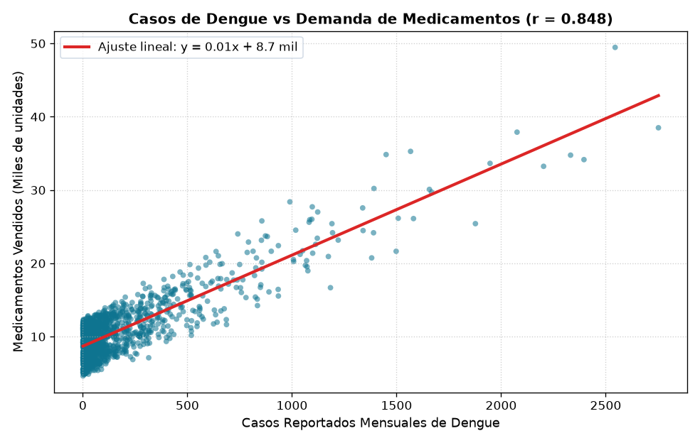
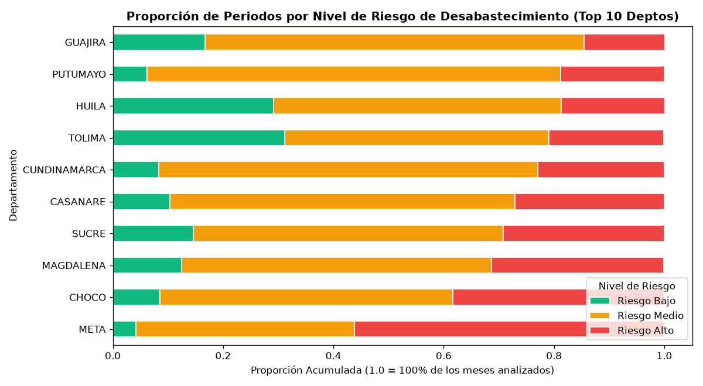
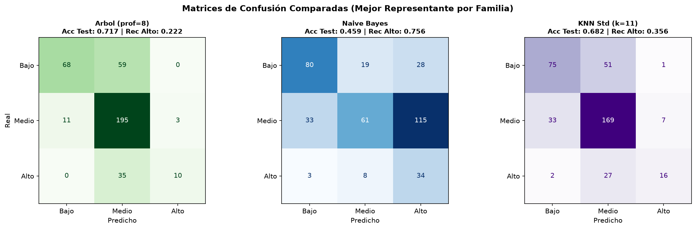
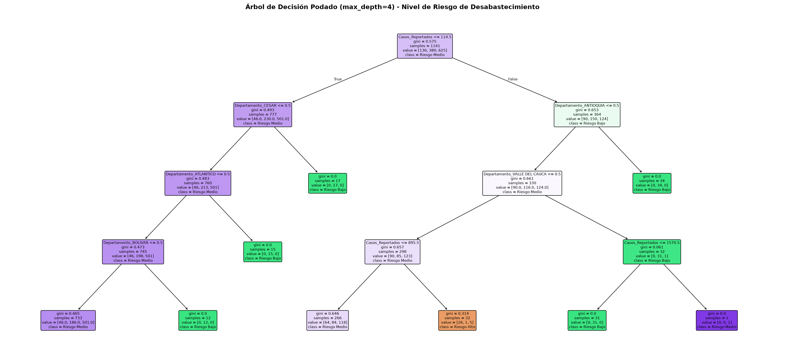

AUDITORÍA METODOLÓGICA EN VIVO
ADN CRISP-DM · De 5.95M Registros Crudos al Motor Predictivo 3D
FASE 1–2 · BRONZE
5,956,452
Registros crudos integrados de SIVIGILA, IDEAM/NASA POWER y SISMED.
→
FASE 3 · SILVER
59,564 filas
Resolución Depto × Mes ISO (%G-W%V-%u) con 0 valores nulos.
→
FASE 3–4 · GOLD
N = 1,522 Dengue
Escalamiento Híbrido (RobustScaler + StandardScaler) preservando picos.
→
FASE 5–6 · DESPLIEGUE
33 Deptos · 2017–2027
Gemelo digital WebGL 3D con alertas tempranas y simulador climático What-If.
3 Fuentes Oficiales Integradas
- SIVIGILA (2017–2021): Casos semanales epidemiológicos convertidos a mes calendario exacto sin distorsión de 48 semanas.
- IDEAM & NASA POWER: Temperatura promedio (°C), lluvias acumuladas (mm) y humedad relativa (%) a nivel departamental.
- SISMED: Comercialización real de analgésicos, antipiréticos y sales de rehidratación para cruzar demanda vs. stock.
Ingeniería de Escalamiento Híbrido (escalamiento.py)
- RobustScaler (Mediana / IQR): Lluvias y Medicamentos — protege el modelo de colas extremas y brotes.
- StandardScaler (μ / σ): Temperatura y Humedad — variables continuas aproximadamente simétricas.
- Sin escalar: Casos Reportados conserva su escala clínica real para disparar reglas logísticas.
Media vs Mediana158.8 / 50.5Asimetría +3.89 · Curtosis 20.45
Outliers IQR (>378.4)184 brotes12.1% · Conservados como señal
Casos vs Medsr = 0.848+12.42 unidades por caso
Top Riesgo CríticoMeta 56.2%Seguido de Chocó (38.3%)
Decisión metodológica clave: Los 184 registros atípicos no son ruido ni errores de captura; son los brotes epidémicos reales (hasta 2,752 casos/mes). Eliminarlos habría ocultado precisamente las emergencias de desabastecimiento que este mapa 3D alerta.




Torneo Supervisado Oficial (75/25 Estratificado)
| Modelo | Acc Test | Brecha | Alto→Bajo |
|---|---|---|---|
| 🏆 Árbol Decisión (prof=8) | 71.65% | 0.015 | 0 / 45 |
| KNN (Standard, k=11) | 68.24% | 0.056 | 2 / 45 |
| Árbol Estándar (prof=4) | 66.93% | -0.008 | 0 / 45 |
| Naive Bayes (Gaussian) | 45.93% | 0.053 | 3 / 45 |
El Árbol ganador evita 100% los errores catastróficos (clasificar un Riesgo Alto real como Riesgo Bajo) y entrega reglas auditables.
Random Forest 2027 · Importancia Clima = 78.2%
Ensamble de 100 árboles (Bagging) que estabiliza las proyecciones continuas de demanda hacia 2025–2027 en este mapa.




Regresión Lineal (Mínimos Cuadrados · Tolima 2019)
ŷ = 8,098.21 + 12.5450 · x
- Bondad de ajuste:
R² = 90.05%(r = 0.9489) sobre Semestre 1 (Ene–Jun 2019). - Interpretación logística: Cada caso adicional de Dengue suma +12.55 unidades sobre un consumo basal de 8,098 u.
- Validación fuera de muestra (Julio):
29,011predichas vs29,729reales SISMED → Error = 2.42%.
Interpolación de Lagrange (P₂ vs P₅ · Tolima 2019)
P₂(x) = −10.9·x² + 198.1·x + 324.8
- Grado 2 (3 nodos: Ene, Mar, Jun): Estima mayo en
1,042.8casos vs1,099reales (Error = 5.11%). Ideal para imputación local. - Advertencia Grado 5 (P₅): Oscila violentamente al extrapolar julio (
+7,562casos, error >350%), demostrando por qué usamos Regresión / ML para pronóstico futuro.